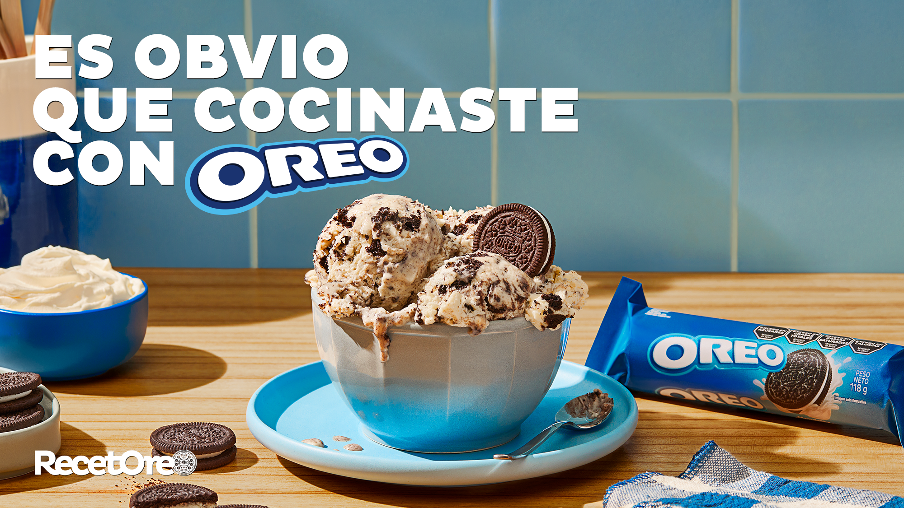
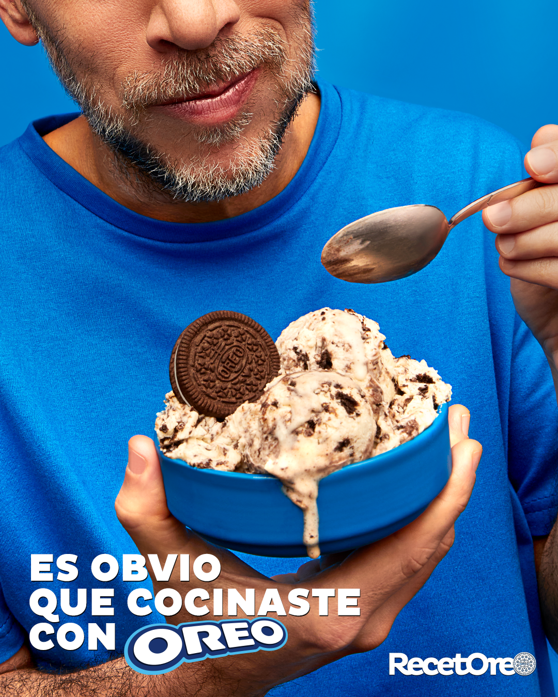
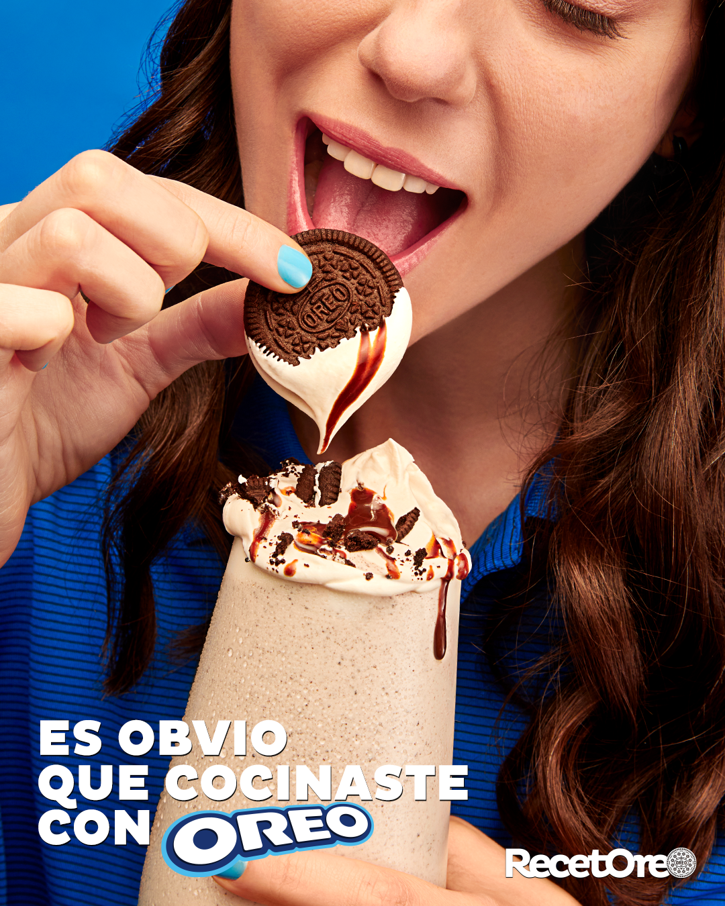
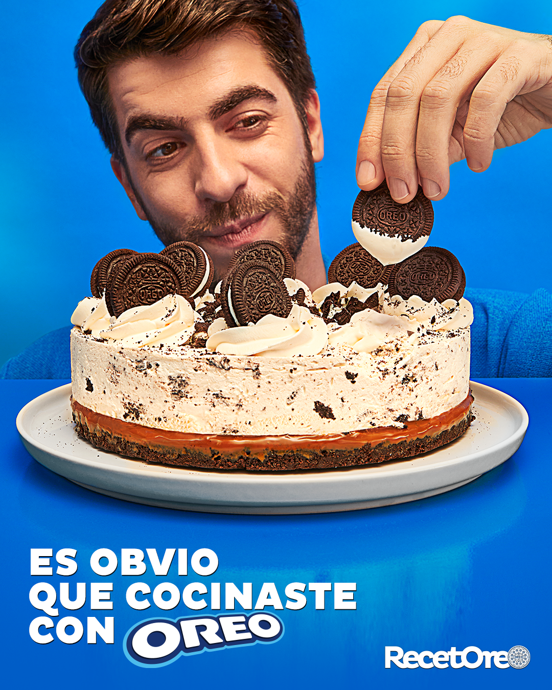
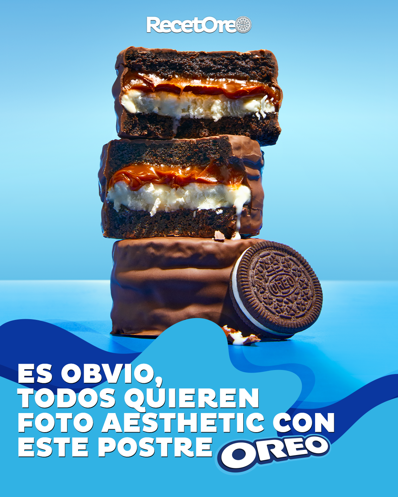
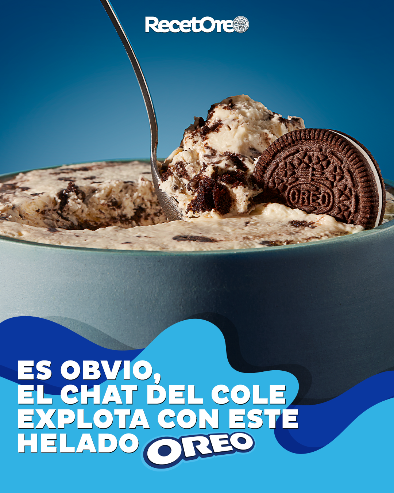
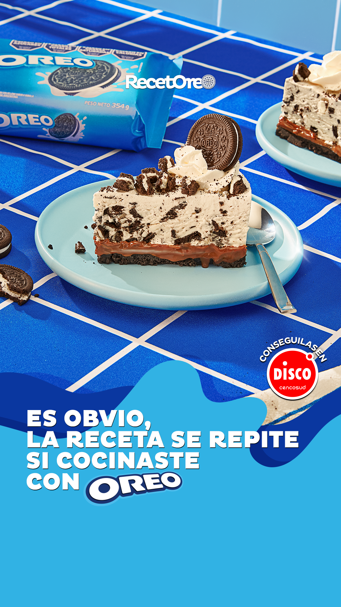
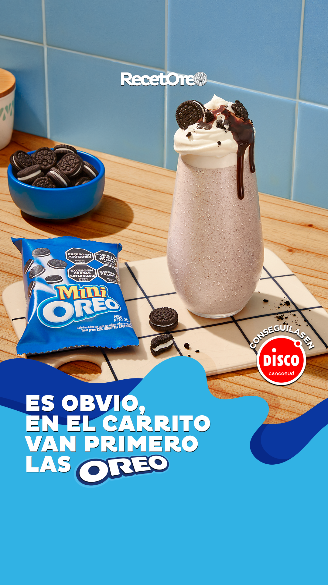

Art direction and design for the Oreo RecetOreo 2025 digital campaign, the brand's recipe platform.
Arte Director & Designer: Santiago Fernández
Head of Art: Andi Fiorilli
Photography: Betania Raiz
Agency: Digitas Argentina







